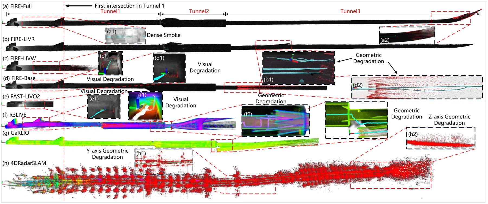
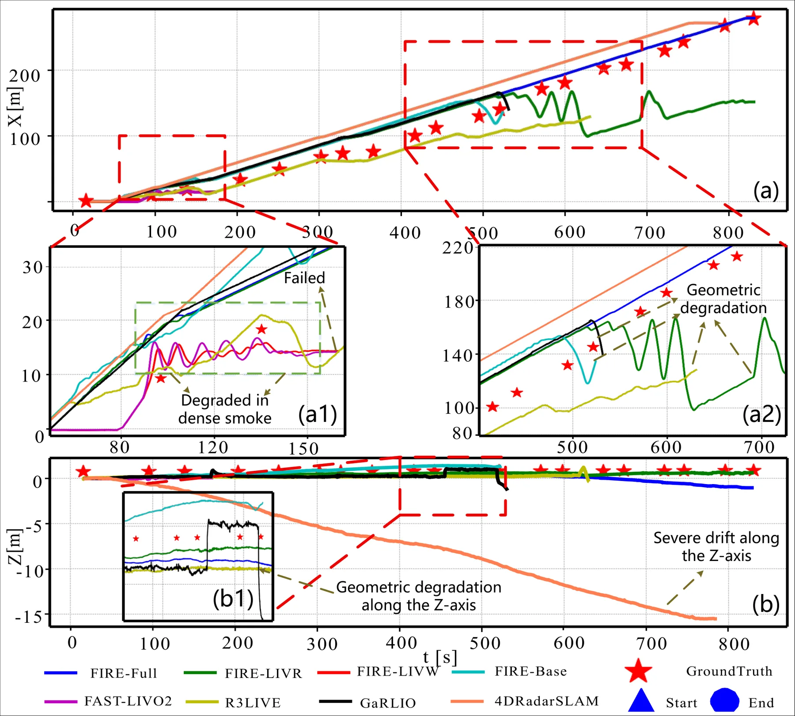
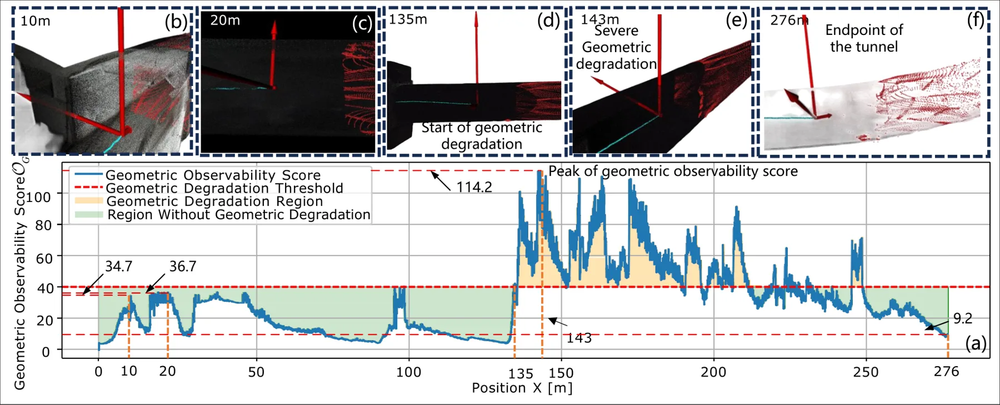
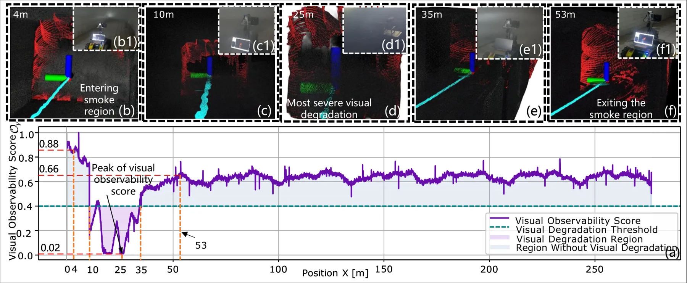

FIRE-LIVWO：借助抗失效 mmWave 雷达增强的鲁棒激光—惯性—视觉—轮速里程计
FIRE-LIVWO: Robust LiDAR-Inertial-Visual-Wheel Odometry via Failure-Immune mmWave Radar Enhancement
这是可靠状态估计方向的直接桥接：重点不只是增加传感器，而是用可观测性指标检测视觉/几何退化，再改变各模态在滤波更新中的权重和组合。
AvgErr
作者、单位与技术谱系 · Research context
作者与单位
研究脉络
- IESKF / LIVO 系统方法基座关系：本文在误差状态迭代滤波与 LiDAR-视觉-惯性里程计基座上增加雷达、轮速和退化处理。[论文原文]
- 退化感知多模态融合方法上游关系：本文将视觉透射率与几何 Hessian 观测性指标联合用于在线模式切换，而非单一固定阈值。[论文原文]
- FIRE-LIVWO本篇推进关系：在真实地下煤矿中验证 failure-immune 的雷达增强 LIVW odometry。[arXiv 摘要页]
合作网络
- China University of Mining and Technology affiliationChina University of Mining and Technology → FIRE-LIVWO关系：共同署名/公开项目[arXiv HTML]
- FIRE-LIVWO project论文作者团队 → FIRE-LIVWO code/project关系：官方项目主页与开源代码[项目主页]
只记录公开署名、单位和项目边，不推断导师/师生关系。
方法本质拆解 · What actually changed
训练层
论文方法描述是 IESKF 与显式残差/观测性分析框架，未报告端到端学习训练、微调权重或训练数据；因此应视为待核验的模型无关滤波系统，而不是默认存在 neural training。
约束层
新增约束包括 LiDAR-radar point-to-plane、Doppler velocity、稀疏视觉 photometric、轮速 NHC 和 lever-arm compensation。约束直接作用在 error-state 的姿态、位置、速度、偏置与重力等状态及其观测残差上。
推理层
在线推理执行 iterated error-state Kalman update，并计算视觉透射率与 LiDAR/radar Hessian 特征值比。根据退化标志动态选择融合模式和模态权重，属于测试时状态估计逻辑而非离线后处理。
机制层
系统把环境退化转译为观测性下降，再用仍可用的雷达 Doppler、几何或轮速约束补回不可观测方向。真正改变的是融合图中的信息分配和失效边界，而非简单堆叠四类传感器。
多模态传感器输入 + 在线观测性指标，改变滤波更新中的残差组合和权重，用雷达/轮速约束替代失效视觉或退化几何。

桥接价值Bridge
桥接价值
FIRE-LIVWO 将‘传感器失效时怎么估计’具体化为在线可观测性检测和融合模式切换问题。对研究路线最有价值的不是矿井场景本身，而是把视觉质量、点云几何和雷达/轮速补偿统一映射到状态协方差与残差权重。
方法与模块Method
方法摘要
系统基于 iterated error-state Kalman filter，在统一 VoxelMap 中融合 LiDAR-radar point-to-plane、稀疏视觉 photometric、Doppler velocity 和轮速 non-holonomic constraints。视觉退化由平均透射率观测性指标检测，几何退化由点云/雷达 Hessian 特征值比检测，随后在线切换融合模式并调整模态权重。
可迁移模块
可迁移模块一是把‘是否使用视觉/雷达/轮速’变成由观测性驱动的状态机，而不是固定传感器配方。模块二是将 Doppler 速度、轮速 NHC 和在线 lever-arm compensation 写成可插拔残差，并在同一 error-state 更新里比较其对可观测方向的贡献。

证据Evidence
关键证据与数字
论文官方 HTML 的真实矿井表格报告 Full FIRE-LIVWO 的 AvgErr 为 5.677，优于 FIRE-LIVR 的 15.420、FIRE-LIVW 的 23.962、FIRE-Base 的 31.596、FAST-LIVO2 的 17.212、R3LIVE 的 45.453 和 GaRLIO 的 17.212/对应表中列出的基线结果；原表需结合 PDF 排版复核个别列对齐。论文明确使用 4D mmWave radar、LiDAR、视觉和轮速，并将切换建立在视觉透射率与 Hessian 特征值比上；跨矿井、跨天气的泛化数字待核验。
边界与下一步Limits & Next Step
边界与风险
作者场景集中在地下煤矿，观测性阈值、VoxelMap 参数和传感器外参可能依赖矿井结构、烟尘浓度与车辆运动。待核验风险包括雷达动态杂波、轮速打滑、阈值迟滞以及切换瞬间协方差是否一致；摘要没有给出完整的故障注入和跨平台统计。
下一步实验
在公开或自采的室内长走廊数据上逐项注入低纹理、遮挡、LiDAR 稀疏化、雷达 dropout 和轮速滑移，并对比固定融合、单 Hessian 阈值和本文双观测性切换。除 ATE/RPE 外，记录模式切换延迟、可观测 Gramian/Hessian 最小特征值、协方差一致性和恢复时间，验证鲁棒性是否来自正确的失效判别。
{kind=link}

{kind=link}

{kind=link}
